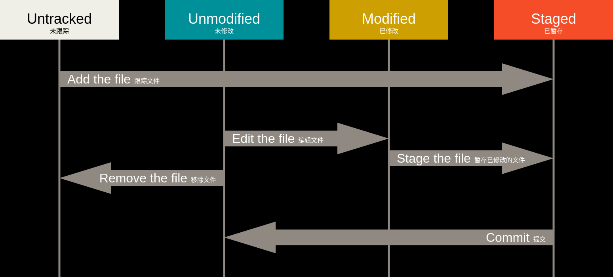

Hello Git
Git 是版本控制工具。
本博文是记录在 Git 官网 学习 Git 过程中的知识点，自用回顾。
以下命令运行在 Linux 上。
Git 安装及配置
针对不同操作系统有不同的安装步骤，具体可以点击该链接查看 Git install。
安装完后需要进行初运行配置：
1 | git config --global user.name "userName" |
获取 Git 仓库
通常有两种获取 Git 项目仓库的方式：
-
将尚未进行版本控制的本地目录转换为 Git 仓库；
-
从其它服务器 克隆 一个已存在的 Git 仓库。
在已存在目录中初始化仓库
1 | cd /home/user/my_project |
该命令将创建一个名为 .git 的子目录，这个子目录含有你初始化的 Git 仓库中所有的必须文件。
如果在一个已存在文件的文件夹（而非空文件夹）中进行版本控制，你应该开始追踪这些文件并进行初始提交：
1 | git add 开始跟踪一个文件 |
现在，得到了一个存在被追踪文件与初始提交的 Git 仓库。
克隆现有的仓库
1 | git clone <url> |
这会在当前目录下创建一个名为 “libgit2” 的目录，并在这个目录下初始化一个 .git 文件夹， 从远程仓库拉取下所有数据放入 .git 文件夹，然后从中读取最新版本的文件的拷贝。
记录每次更新到仓库
工作目录下的每一个文件都不外乎这两种状态：已跟踪 或 未跟踪。已跟踪的文件是指那些被纳入了版本控制的文件，在上一次快照中有它们的记录，在工作一段时间后， 它们的状态可能是未修改，已修改或已放入暂存区。
工作目录中除已跟踪文件外的其它所有文件都属于未跟踪文件，它们既不存在于上次快照的记录中，也没有被放入暂存区。

查看文件状态
1 | 查看文件状态。 |
输入 git status -s 会得到以下输出：
1 | M README |
标记解释，左栏指明暂存区的状态，右栏指明工作区的状态：
??: 新添加的未跟踪文件A: 新添加到暂存区中的文件M: 已修改且已暂存M: 已修改但未暂存MM: 修改暂存后，又作了修改
跟踪新文件
1 | git add <file> |
git add 命令使用文件或目录的路径作为参数；如果参数是目录的路径，该命令将递归地跟踪该目录下的所有文件。
暂存已修改的文件
git add是个多功能命令，理解为“精确地将内容添加到下一次提交中”：
- 跟踪新文件
- 把已跟踪的文件放到暂存区
- 合并时把有冲突的文件标记为已解决状态等
已跟踪文件的内容发生了变化，需要重新添加到暂存区，运行 git add 命令。
当你一次性修改了大量文件后，希望提交是逻辑上独立的变更集，见 Git 工具 - 交互式暂存
提交更新
现在的暂存区已经准备就绪，可以提交了。
1 | git commit |
该命令会启动你选择的文本编辑器来输入提交说明。
也可以将提交信息与命令放在同一行：
1 | git commit -m "提交说明" |
提交后它会告诉你，当前是在哪个分支提交的，本次提交的完整 SHA-1 校验和，以及在本次提交中，有多少文件修订过，多少行添加和删改过。
提交时记录的是放在暂存区域的快照，任何还未暂存文件的仍然保持已修改状态。
跳过使用暂存区域的提交方式，加上 -a 选项，Git 会自动把所有已跟踪过的文件暂存起来一并提交，从而跳过git add 步骤。
1 | git commit -a -m "提交说明" |
忽略文件
一些自动生成的文件，如日志，或编译过程中创建的临时文件等，这些文件无需纳入 Git 的管理，又不希望总出现在未跟踪文件列表。可以通过 .gitignore 文件列出要忽略的文件。
.gitignore 的格式规范：
-
所有空行或以
#开头的行都会被 Git 忽略； -
glob 模式匹配，递归地应用在整个工作区中；
-
匹配模式以
/开头防止递归； -
匹配模式以
/结尾指定目录； -
!忽略指定模式以外的文件或目录
glob 模式是指 shell 所使用的简化了的正则表达式。
*匹配零个或多个任意字符；[abc]匹配任何一个列在方括号中的字符；?只匹配一个任意字符；[0-9]表示匹配所有 0 到 9 的数字;**表示匹配任意中间目录。
.gitignore 文件举例：
1 | # 忽略所有以 .o 或 .a 结尾的文件 |
针对各种项目和语言的 .gitignore 模板可以参考 https://github.com/github/gitignore 。
移除文件
如果只是简单地从工作目录手工删除文件，运行 git status会在 未暂存清单 中看到提示。
从 Git 中移除某个文件，可以用 git rm 命令从已跟踪文件清单中移除（即从暂存区移除）。
1 | 从暂存区和工作目录中移除文件 |
移动文件
移动文件，即重命名了某个文件。
1 | git mv file_from file_to |
相当于运行了下面三条命令：
1 | mv file_from file_to |
查看具体修改
相较于 git status，git diff 能通过文件补丁的格式更加具体地显示哪些行发生了改变。
1 | 查看尚未暂存的文件更新了哪些部分 |
git diff A...B: 比较的是 A 分支和 B 分支的共同祖先 与 B 之间的差异。换言之，它只看 B 分支相对于共同祖先的新增内容，忽略 A 分支独有的更改。
查看提交历史
按时间先后顺序列出所有的提交，最近的更新排在最上面:
1 | git log |
这个命令会列出每个提交的 SHA-1 校验和、作者的名字和电子邮件地址、提交时间以及提交说明。
git log --left-right A...B: 快速查看两个分支分叉后各自新增加了哪些提交（排除共有祖先部分的提交历史）。
git log A..B表示“从 B 中可达，但从 A 中不可达”的提交。等价于git log ^A B。
当你 git fetch 后，想查看远程分支比本地分支多了哪些新提交时使用。
git log A B ^C列出从 A 或 B 可达但排除 C 可达的提交。
定制输出格式的选项
git log 定制输出格式的常用选项：
| 选项 | 说明 |
|---|---|
-por --patch |
按补丁格式显示每个提交引入的差异 |
--stat |
显示每次提交的文件修改统计信息 |
--shortstat |
只显示 --stat 中最后的行数修改添加移除统计 |
--name-only |
仅在提交信息后显示已修改的文件清单 |
--name-status |
显示新增、修改、删除的文件清单。 |
--abbrev-commit |
仅显示 SHA-1 校验和所有 40 个字符中的前几个字符 |
--relative-data |
使用较短的相对时间而不是完整格式显示日期 |
--graph |
在日志旁以 ASCII 图形显示分支与合并历史 |
--pretty |
使用其他格式显示历史提交信息。可用的选项包括 oneline、short、full、fuller 和 format（用来定义自己的格式） |
--oneline |
–pretty=oneline --abbrev-commit 合用的简写 |
--pretty=format:"%h - %an, %ar : %s": 定制记录的显示格式。以下列出了 format 接受的常用格式占位符的写法及其代表的意义:
| 选项 | 说明 |
|---|---|
%H |
提交的完整哈希值 |
%h |
提交的简写哈希值 |
%T |
树的完整哈希值 |
%t |
树的简写哈希值 |
%P |
父提交的完整哈希值 |
%p |
父提交的简写哈希值 |
%an |
作者名字 |
%ae |
作者的电子邮件地址 |
%ad |
作者修订日期（可以用 --date=选项 来定制格式） |
%ar |
作者修订日期，按多久以前的方式显示 |
%cn |
提交者的名字 |
%ce |
提交者的电子邮件地址 |
%cd |
提交日期 |
%cr |
提交日期（距今多长时间） |
%s |
提交说明 |
限制输出长度的选项
| 选项 | 说明 |
|---|---|
-n |
仅显示最近的 n 条提交 |
--sinceor --after |
仅显示指定时间之后的提交 |
--untilor --before |
仅显示指定时间之前的提交 |
--author |
仅显示作者匹配指定字符串的提交 |
--committer |
仅显示提交者匹配指定字符串的提交 |
--grep |
仅显示提交说明中包含指定字符串的提交 |
-S |
仅显示添加或删除内容匹配指定字符串的提交 |
--no-merges |
隐藏合并提交 |
最后一个很实用的选项是路径（path）， 如果只关心某些文件或者目录的历史提交，可以在 git log 选项的最后指定它们的路径。 因为是放在最后位置上的选项，所以用两个短划线（–）隔开之前的选项和后面限定的路径名。
如果要在 Git 源码库中查看 Junio Hamano 在 2008 年 10 月其间， 除了合并提交之外的哪一个提交修改了测试文件，可以使用下面的命令：
1 | git log --pretty="%h - %s" --author='Junio C Hamano' --since="2008-10-01" \ |
可以指定多个
--author和--grep搜索条件，这样会只输出匹配任意--author模式和任意--grep模式的提交。然而，如果你添加了--all-match选项， 则只会输出匹配所有--grep模式的提交。
撤销操作
撤销操作是使用 Git 的过程中，会因为操作失误而导致之前的工作丢失的少有的几个地方之一。
重新提交
更详细内容请看 Git 工具 - 重写历史
有时候我们提交完了才发现漏掉了几个文件没有添加，或者提交信息写错了。 为避免仓库历史被弄乱，可以运行带有 --amend 选项的提交命令来重新提交：
1 | git commit --amend |
最终你只会有一个提交——第二次提交将代替第一次提交的结果。
取消暂存的文件
更详细内容及原理见 Git 工具 - 重置揭密
你执行了 git add <file>，然后发现还不想提交这个文件，只想让它回到未暂存状态：
1 | git reset HEAD <file> |
撤销对文件的修改
放弃对文件的所有未暂存修改，将它还原成上次提交时的样子：
1 | git checkout -- <file> |
这是一个危险的命令。你对那个文件在本地的任何修改都会消失——Git 会用最近提交的版本覆盖掉它。
管理远程仓库
远程仓库是指托管在因特网或其他网络中的你的项目的版本库。
管理远程仓库包括了解如何添加远程仓库、移除无效的远程仓库、管理不同的远程分支并定义它们是否被跟踪等等。
添加远程仓库
添加一个新的远程 Git 仓库，同时指定一个方便使用的简写：
1 | git remote add <shortname> <url> |
现在可以在命令行中使用字符串 <shortname> 来代替整个 URL。
查看远程仓库
1 | 列出你指定的每一个远程服务器的简写 |
查看某个远程仓库
1 | git remote show <remote> |
该命令查看某一个远程仓库的更多信息，会列出远程仓库的 URL 与远程分支的信息、拉取时哪些本地分支可以与它跟踪的远程分支自动合并、推送时会自动地推送到哪一个远程分支。
从远处仓库中抓取
<remote>是远程仓库的简写
1 | git fetch <remote> |
这个命令会访问远程仓库，从中抓取所有你还没有的数据。 执行完成后，你将会拥有那个远程仓库中所有分支的引用，可以随时合并或查看。
注意 git fetch 命令只会将数据下载到你的本地仓库——它并不会自动合并或修改你当前的工作。
推送到远程仓库
本地的分支并不会自动与远程仓库同步——你必须显式地推送想要分享的分支。
1 | 默认情况下，它会从当前分支关联的远程仓库（通常是 origin）拉取代码，并合并到当前分支 |
需要远程仓库的写入权限，且之前没有人推送过时，这条命令才能生效。
当你和其他人在同一时间克隆，他们先推送到上游然后你再推送到上游，你的推送就会毫无疑问地被拒绝。你必须先抓取他们的工作并将其合并进你的工作后才能推送。
更多内容请见 Git 分支中的推送
远程仓库的重命名与移除
修改一个远程仓库的简写名：
1 | git remote rename <原简写名> <新简写名> |
这同样也会修改你所有远程跟踪的分支名字。
移除一个远程仓库：
1 | git remote remove <remote> |
一旦你使用这种方式删除了一个远程仓库，那么所有和这个远程仓库相关的远程跟踪分支以及配置信息也会一起被删除。
克隆远程仓库
把别人的（或自己的）仓库“下载”到你的电脑上并开始工作，可以用 git clone 命令。
1 | git clone <url> |
git clone 实际上是下面几个命令的快捷方式：
-
git init（创建空的本地仓库） -
git remote add origin <url>（添加远程地址） -
git fetch origin（下载所有历史） -
git checkout origin/HEAD（或默认分支，检出工作副本）
你也可以手动执行这些步骤，但 clone 一步到位。
Git 分支
Git 分支的本质是指向提交对象的可变指针。详情见 深入 Git 分支
使用分支意味着你可以把你的工作从开发主线上分离开来，以免影响开发主线。
比如，你突然接到一个电话说有个很严重的问题需要紧急修补。 你可以按照如下方式来处理：
-
切换到你的线上分支（production branch）。
-
为这个紧急任务新建一个分支，并在其中修复它。
-
在测试通过之后，切换回线上分支，然后合并这个修补分支，最后将改动推送到线上分支。
-
切换回你最初工作的分支上，继续工作。
查看分支
查看仓库的所有分支：
1 | git branch |
| 选项 | 说明 |
|---|---|
| -v | 查看每一个分支的最后一次提交 |
| –merged | 过滤出已经合并到当前分支的分支 |
| –no-merged | 过滤尚未合并到当前分支的分支 |
切换分支
切换到指定分支：
1 | git checkout <branchname> |
新建分支
新建分支：
1 | git branch <branchname> |
新建一个分支并同时切换到那个分支上：
1 | git checkout -b <newbranchname> |
它是下面两条命令的简写：
1 | git branch <branchname> |
合并分支
我们以一个例子来了解如何合并分支，并且遇到合并冲突时如何解决。
如下图所示，目前有两个分支 master 和 iss53。

现在有一个紧急问题需要我们切回 master 分支进行修复，我们添加新的分支 hotfix，在该分支上工作直到问题解决：
1 | git checkout master |

解决完成，并通过测试，就可以将 hotfix 分支合并回你的 master 分支来部署到线上。
可以使用 git merge 命令来达到上述目的：
1 | git checkout master |
执行命令后，你会看到如下内容
1 | Updating f42c576..3a0874c |
Fast-forward，快进：由于你想要合并的分支 hotfix 所指向的提交 C4 是你所在的提交 C2 的直接后继，这种情况下的合并操作没有需要解决的分歧，因此 Git 会直接将指针向前移动。

master 分支和 hotfix 分支指向了同一个位置，此时不再需要 hotfix 分支，我们可以删除它：
1 | git branch -d hotfix |
现在可以切换回 iss53 分支继续工作。
1 | git checkout iss53 |

你在
hotfix分支上所做的工作并没有包含到iss53分支中。如果你需要拉取hotfix所做的修改，你可以使用git merge master命令将master分支合并入iss53分支，或者你也可以等到iss53分支完成其使命，再将其合并回master分支。
假设现在已修正了 #53 问题，并且打算将你的工作合并入 master 分支。
1 | git checkout master |
执行命令会看到如下内容：
1 | Merge made by the 'recursive' strategy. |
由于你的开发历史从一个更早的地方开始分叉开来（diverged），导致了 master 分支所在提交并不是 iss53 分支所在提交的直接祖先，Git 不得不做一些额外的工作，它会使用两个分支的末端所指的快照（C4 和 C5）以及这两个分支的公共祖先（C2），做一个简单的三方合并。

和之前将分支指针向前推进所不同的是，Git 将此次三方合并的结果做了一个新的快照并且自动创建一个新的提交指向它。这个被称作一次合并提交，它的特别之处在于他有不止一个父提交。

修改已经合并进来了，就不再需要 iss53 分支了。现在你可以在任务追踪系统中关闭此项任务，并删除这个分支。
合并冲突
有时候合并操作并不会向上一节所示那样顺利。如果你在两个不同的分支中，对同一个文件的同一个部分进行了不同的修改，Git 就没法干净的合并它们。在合并它们的时候就会产生合并冲突：
1 | Auto-merging index.html |
此时 Git 做了合并，但是没有自动地创建一个新的合并提交。Git 会暂停下来，等待你去解决合并产生的冲突。
可以在合并冲突后的任意时刻使用 git status 命令来查看那些因包含合并冲突而处于未合并（unmerged）状态的文件：
1 | On branch master |
Git 会在有冲突的文件中加入标准的冲突解决标记，这样你可以打开这些包含冲突的文件然后手动解决冲突。 出现冲突的文件会包含一些特殊区段，看起来像下面这个样子：
1 | <<<<<<< HEAD:index.html |
这表示 HEAD 所指示的版本（即 master 分支所在的位置）在这个区段的上半部分（======= 的上半部分），而 iss53 分支所指示的版本在 ======= 的下半部分。 为了解决冲突，你必须选择使用由 ======= 分割的两部分中的一个，或者你也可以自行合并这些内容。
例如，你可以通过把这段内容换成下面的样子来解决冲突：
1 | <div id="footer"> |
在你解决了所有文件里的冲突之后，对每个文件使用 git add 命令来将其标记为冲突已解决。
如果你对结果感到满意，并且确定之前有冲突的文件都已经暂存了，这时你可以输入 git commit 来完成合并提交。
有一个好用的 Git 工具 - Rerere，它允许你让 Git 记住解决一个块冲突的方法， 这样在下一次看到相同冲突时，Git 可以为你自动地解决它。
删除分支
1 | git branch -d <branchname> |
删除未合并的分支会失败。可以用 -D 选项强制删除，但不推荐。
远程分支
我们前面新建、合并和删除分支，所有这一切都只发生在你本地的 Git 版本库中 —— 没有与服务器发生交互。
远程引用是对远程仓库的引用（指针），包括分支、标签等等。
获得远程引用的完整列表：
1 | git ls-remote <remote> |
获得远程分支的更多信息：
1 | git remote show <remote> |
远程跟踪分支是远程分支状态的引用。它们是你无法移动的本地引用。
它们以<remote>/<branch>的形式命名。
一旦你进行了网络通信， Git 就会为你移动它们以精确反映远程仓库的状态。
例：假设你的网络里有一个在 git.ourcompany.com 的 Git 服务器。 如果你从这里克隆，Git 的 clone 命令会为你自动将其命名为 origin，拉取它的所有数据， 创建一个指向它的 master 分支的指针，并且在本地将其命名为 origin/master。 Git 也会给你一个与 origin 的 master 分支在指向同一个地方的本地 master 分支，这样你就有工作的基础。

如果你在本地的 master 分支做了一些工作，在同一段时间内有其他人推送提交到 git.ourcompany.com 并且更新了它的 master 分支，这就是说你们的提交历史已走向不同的方向。 即便这样，只要你保持不与 origin 服务器连接（并拉取数据），你的 origin/master 指针就不会移动。

如果要与给定的远程仓库同步数据，运行 git fetch <remote> 命令（在本例中为 git fetch origin）。 这个命令查找 “origin” 是哪一个服务器（在本例中，它是 git.ourcompany.com）， 从中抓取本地没有的数据，并且更新本地数据库，移动 origin/master 指针到更新之后的位置。

假定你有另一个内部 Git 服务器，仅服务于你的某个敏捷开发团队。这个服务器位于 git.team1.ourcompany.com。 你可以运行 git remote add 命令添加一个新的远程仓库引用到当前的项目，将这个远程仓库命名为 teamone，将其作为完整 URL 的缩写。

现在，可以运行 git fetch teamone 来抓取远程仓库 teamone 有而本地没有的数据。 因为那台服务器上现有的数据是 origin 服务器上的一个子集， 所以 Git 并不会抓取数据而是会设置远程跟踪分支 teamone/master 指向 teamone 的 master 分支。

推送
引用规范（refspec）:
+<src>:<dst>，详情见 Git 内部原理 - 引用规范
当你想要公开分享一个分支时，需要将其推送到有写入权限的远程仓库上。
本地的分支并不会自动与远程仓库同步——你必须显式地推送想要分享的分支。
假如你希望和别人一起在名为 serverfix 的分支上工作，运行 git push <remote> <branch>:
1 | git push origin serverfix |
这里有些工作被简化了。Git 自动将 serverfix 分支名字展开为 refs/heads/serverfix:refs/heads/serverfix，意味着，“推送本地的 serverfix 分支来更新远程仓库上的 serverfix 分支。”
可以通过这种格式来推送本地分支到一个命名不相同的远程分支。如果并不想让远程仓库上的分支叫做
serverfix，可以运行git push origin serverfix:awesomebranch来将本地的serverfix分支推送到远程仓库上的awesomebranch分支。
下一次其他协作者从服务器上 git fetch origin 抓取数据时，他们会在本地生成一个远程分支 origin/serverfix，指向服务器的 serverfix 分支的引用。
要特别注意的一点是当抓取到新的远程跟踪分支时，本地不会自动生成一份可编辑的副本（拷贝）。换一句话说，这种情况下，不会有一个新的 serverfix 分支——只有一个不可以修改的 origin/serverfix 指针。
可以运行 git merge origin/serverfix 将这些工作合并到当前所在的分支。如果想要在自己的 serverfix 分支上工作，可以将其建立在远程跟踪分支之上：
1 | git checkout -b serverfix origin/serverfix |
这会给你一个用于工作的本地分支，并且起点位于 origin/serverfix。
跟踪分支
从一个远程跟踪分支检出一个本地分支会自动创建所谓的“跟踪分支”（它跟踪的分支叫做“上游分支”）。
跟踪分支是与远程分支有直接关系的本地分支。如果在一个跟踪分支上输入 git pull，Git 能自动地识别去哪个服务器上抓取、合并到哪个分支。
当克隆一个仓库时，它通常会自动地创建一个跟踪 origin/master 的 master 分支。
由于 git checkout -b <branch> <remote>/<branch> 操作太常用了，所以 Git 提供了两个快捷方式：
- 快捷方式一：
--track选项
1 | git checkout --track origin/serverfix |
- 快捷方式二：如果你尝试检出的分支 (a) 不存在且 (b) 刚好只有一个名字与之匹配的远程分支，那么 Git 就会为你创建一个跟踪分支
1 | git checkout serverfix |
如果想要将本地分支与远程分支设置为不同的名字：
1 | git checkout -b sf origin/serverfix |
现在，本地分支 sf 会自动从 origin/serverfix 拉取。
设置已有的本地分支跟踪一个刚刚拉取下来的远程分支，或者想要修改正在跟踪的上游分支，你可以在任意时间使用 -u 或 --set-upstream-to 选项运行 git branch 来显式地设置。
1 | git branch -u origin/serverfix |
上游快捷方式：当设置好跟踪分支后，可以通过简写
@{upstream}或@{u}来引用它的上游分支。 所以在master分支时并且它正在跟踪origin/master时，如果愿意的话可以使用git merge @{u}来取代git merge origin/master。
查看设置的所有跟踪分支：
1 | git branch -vv |
这会将所有的本地分支列出来并且包含更多的信息，如每一个分支正在跟踪哪个远程分支与本地分支是否是领先、落后或是都有。
1 | iss53 7e424c3 [origin/iss53: ahead 2] forgot the brackets |
可以看到 iss53 分支正在跟踪 origin/iss53 并且 “ahead” 是 2，意味着本地有两个提交还没有推送到服务器上。也能看到 master 分支正在跟踪 origin/master 分支并且是最新的。 接下来可以看到 serverfix 分支正在跟踪 teamone 服务器上的 server-fix-good 分支并且领先 3 落后 1， 意味着服务器上有一次提交还没有合并入同时本地有三次提交还没有推送。 最后看到 testing 分支并没有跟踪任何远程分支。
需要重点注意的一点是这些数字的值来自于你从每个服务器上最后一次抓取的数据。这个命令并没有连接服务器，它只会告诉你关于本地缓存的服务器数据。
如果想要统计最新的领先与落后数字，需要在运行此命令前抓取所有的远程仓库。
1 | git fetch --all; git branch -vv |
拉取
当 git fetch 命令从服务器上抓取本地没有的数据时，它并不会修改工作目录中的内容。它只会获取数据然后让你自己合并。
有一个命令叫作 git pull，在大多数情况下它的含义是一个 git fetch 紧接着一个 git merge 命令。
git pull 会查找当前分支所跟踪的服务器与分支，从服务器上抓取数据然后尝试合并入那个远程分支。
删除远程分支
假设你已经通过远程分支做完所有的工作了——也就是说你和你的协作者已经完成了一个特性，并且将其合并到了远程仓库的 master 分支（或任何其他稳定代码分支）。
如果想要从服务器上删除 serverfix 分支，可以运行带有 --delete 选项的 git push 命令来删除一个远程分支：
1 | git push origin --delete serverfix |
基本上这个命令做的只是从服务器上移除这个指针。Git 服务器通常会保留数据一段时间直到垃圾回收运行，所以如果不小心删除掉了，通常是很容易恢复的。
变基
在 Git 中整合来自不同分支的修改主要有两种方法：merge 以及 rebase。
变基的基本操作
rebase 命令将提交到某一分支上的所有修改都移至另一分支上，就好像“重新播放”一样。

在上图例子中，你可以检出 experiment 分支，然后将它变基到 master 分支上：
1 | git checkout experiment |
rebase 提取在 C4 中引入的补丁和修改，然后在 C3 的基础上应用一次。
原理是首先找到这两个分支（即当前分支 experiment、变基操作的目标基底分支 master） 的最近共同祖先 C2，然后对比当前分支相对于该祖先的历次提交，提取相应的修改并存为临时文件， 然后将当前分支指向目标基底 C3, 最后以此将之前另存为临时文件的修改依序应用。

现在回到 master 分支，进行一次快进合并。
1 | git checkout master |

merge 和 rebase 整合的最终结果所指向的快照始终是一样的，只不过提交历史不同罢了。
变基是将一系列提交按照原有次序依次应用到另一分支上，尽管实际的开发工作是并行的， 但它们看上去就像是串行的一样，提交历史是一条直线没有分叉。
变基的目的主要是为了确保在向远程分支推送时能保持提交历史的整洁。
更有趣的变基例子

如上图，有三个分支 master、server 和 client。假设你希望将 client 中的修改合并到主分支并发布，但暂时并不想合并 server 中的修改， 因为它还需要经过更全面的测试。
- 选中在
client分支里但不在server分支里的修改（即 C8 和 C9），将它们在master分支上重放：
1 | git rebase --onto master server client |

- 快进合并入 master 分支
1 | git checkout master |

- 接下来你决定将 server 分支中的修改也整合进来。
1 | git rebase master server |

- 快进合并入主分支，并删除无用分支
1 | git checkout master |

变基的风险与解决方案
变基须遵循准则：只对尚未推送或分享给别人的本地修改执行变基操作清理历史， 从不对已推送至别处的提交执行变基操作。
详细内容见 Git 分支-变基的风险
变基操作的实质是丢弃一些现有的提交，然后相应地新建一些内容一样但实际上不同的提交。
如果你只对不会离开你电脑的提交执行变基，那就不会有事。如果你对已经推送过的提交执行变基，但别人没有基于它的提交，那么也不会有事。 如果你对已经推送至共用仓库的提交上执行变基命令，并因此丢失了一些别人的开发所基于的提交， 那你就有大麻烦了，你的同事也会因此鄙视你。
如果你或你的同事在某些情形下决意要这么做，请一定要通知每个人执行 git pull --rebase 命令，这样尽管不能避免伤痛，但能有所缓解。
变基 vs. 合并
变基和合并，哪一个更好？
这涉及到你对仓库提交历史的看法。
-
历史记录派：认为提交历史应当真实记录实际发生过的事，即使混乱也有保留价值，不可篡改（反对使用变基改写历史）。
-
故事编撰派：认为提交历史是为了后人阅读而精心编排的故事，允许通过变基、过滤等工具重写，使其更清晰、易用。
Git 既强大又灵活，变基和合并各有适用场景。每个团队、项目对“历史”的定位不同，应基于实际需求做出选择。
标签 tag
Git 可以给仓库历史中的某一个提交打上标签，以示重要。
标签和分支差不多，都是包含了一个指针，指向了提交对象，不过分支会随着工作前进，而标签会永远停留。
标签给提交对象加上一个更友好的名字。
除此之外，标签还包含一个标签创建者信息、一个日期、一段注释信息。
列出标签
列出已有的标签：
1 | git tag |
按通配符列出标签，需要 -l 或 --list 选项：
1 | git tag -l "v1.0*" |
创建标签
Git 支持两种标签：
-
轻量标签（lightweight）：只是某个特定提交的引用，本质上是将提交校验和存储到一个文件中。
-
附注标签（annotated）：存储在 Git 数据库中的一个完整对象， 它们是可以被校验的，其中包含打标签者的名字、电子邮件地址、日期时间， 此外还有一个标签信息，并且可以使用 GNU Privacy Guard （GPG）签名并验证。
创建附注标签，指定 -a 选项：
1 | git tag -a v1.0 -m "my version 1.0" |
创建轻量标签：
1 | git tag v1.0.1 |
给过去的提交打标签，要在命令的末尾指定提交的校验和：
1 | git tag -a v0.1 a348fa3 |
共享标签
默认情况下，git push 命令并不会传送标签到远程仓库服务器上。 在创建完标签后你必须显式地推送标签到共享服务器上。
推送指定标签到远程仓库：
1 | git push <remote> <tagname> |
推送所有不在远程仓库的标签：
1 | git push <remote> --tags |
删除标签
删除本地仓库上的标签：
1 | git tag -d <tagname> |
注意上述命令并不会从任何远程仓库中移除这个标签。
有两种从远程仓库移除标签的方式：
1 | 方式一 |
检出标签
如果你想查看某个标签所指向的文件版本，可以使用 git checkout 命令， 虽然这会使你的仓库处于“分离头指针（detached HEAD）”的状态。
1 | git checkout <tagname> |
Git 工具 - 贮藏
git stash是 Git 工作流中非常实用的“临时抽屉”，让你无需提交半成品代码就能轻松切换上下文。
git stash 用于临时保存工作区和暂存区的修改，保存到一个栈上，将当前目录恢复到干净的状态（即最近一次 commit 的状态），而你可以在任何时候重新应用这些改动（甚至在不同的分支上），方便你切换分支、拉取代码或处理紧急任务。
1 | git stash # 保存当前修改（包括已暂存和未暂存的文件），工作区回到干净状态 |
git stash 选项：
-
--keep-indexgit stash会保存全部修改，工作区和暂存区都变干净。git stash --keep-index会保存全部修改，但暂存区的内容会重新应用到工作区
-
--indexgit stash apply只会恢复工作区的改动，而不会恢复暂存区（即所有改动都会变成未暂存状态）。加上git stash apply --index，Git 会尝试将你stash之前的暂存状态也原样恢复。。
-
-u:git stash默认不会保存未跟踪的文件。这些文件会留在工作区。-u的作用：将未跟踪的文件也一并贮藏起来，使工作区完全干净（等同于git clean -fd效果但可恢复）。 -
-aor-all:-u不会贮藏被忽略的文件，-a会。 -
-por--patch: 交互式选择要贮藏的代码块。
Git 工具 - 清理
git clean 清理工作区中没有被 Git 跟踪的文件（即不在版本控制中的文件）。
典型场景：删除编译生成的临时文件、日志、缓存等，让工作区恢复到干净状态。
1 | git clean -n # 预览会删除哪些文件（安全，不实际删除） |
detached HEAD
HEAD 通常是一个指针，指向当前所在的分支（例如 main）。分支再指向某个提交。所以一般情况下：HEAD -> main -> commit。
detached HEAD 是 Git 中的一种状态，意思是：当前 HEAD 指针没有指向一个分支（branch），而是直接指向某一个具体的提交（commit）。
detached HEAD 时：HEAD 直接指向一个具体的提交（没有分支指向它）。
checkout 一个历史提交/远程分支/tag时都会进入 detached HEAD。
detach HEAD 的好处是可以查看、编译、测试历史代码：很适合回溯调试。
坏处是进行了新的提交，但因为没有分支指向，切回其他分支后，这些提交可能会变得“悬空”，最终被 Git 垃圾回收。
如果想保留在 detached HEAD 状态下的修改，创建新分支即可：
1 | 提交已经在 detached HEAD 下完成 |
Git 别名
Git 并不会在你输入部分命令时自动推断出你想要的命令。 如果不想每次都输入完整的 Git 命令，可以通过 git config 文件来轻松地为每一个命令设置一个别名。
1 | git config --global alias.br branch |
下面两条命令等价：
1 | git unstage <file> |
可以看出，Git 只是简单地将别名替换为对应的命令。
 微信
微信 支付宝
支付宝